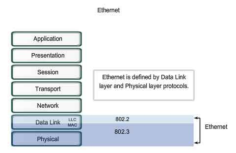
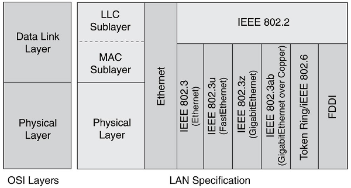
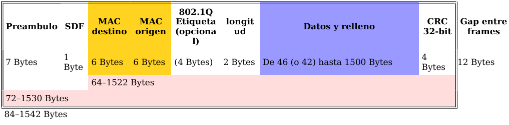
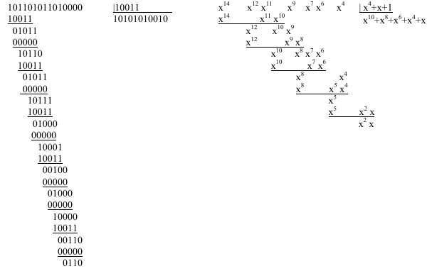
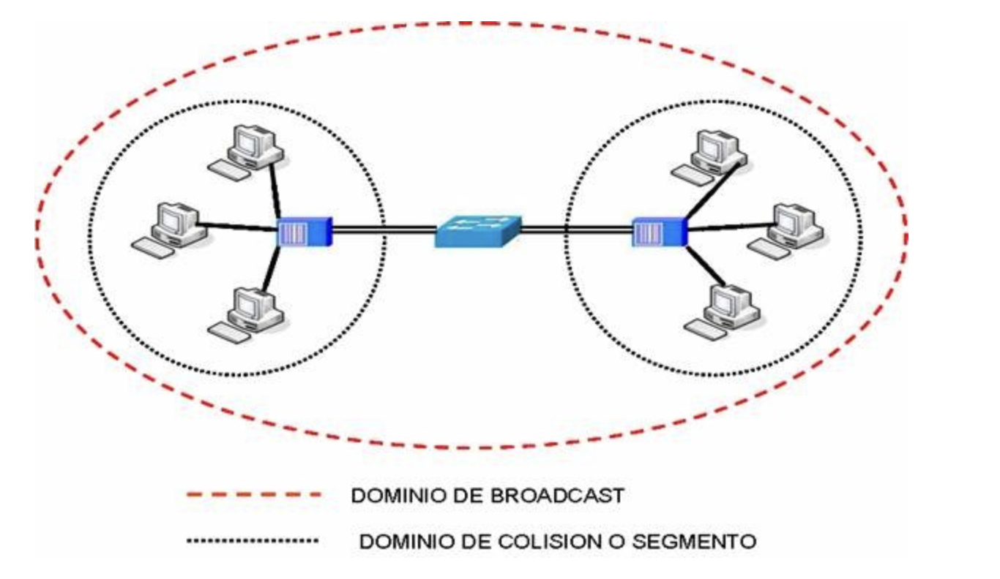
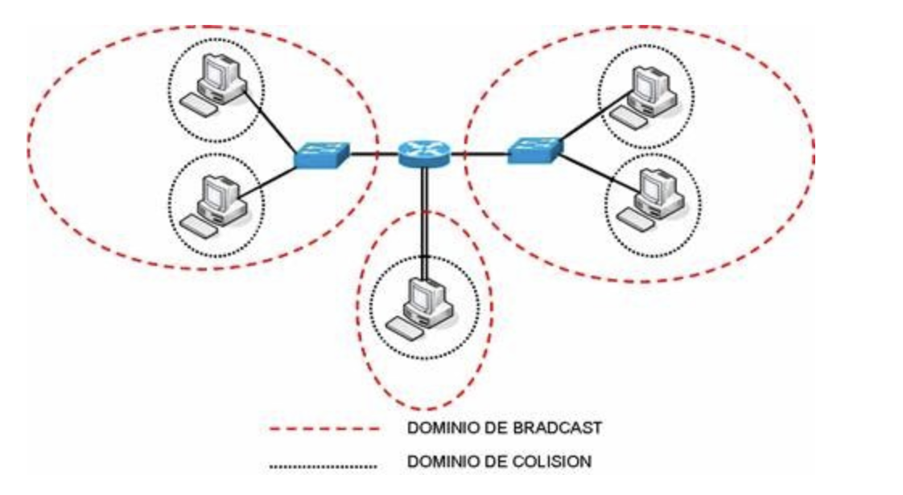
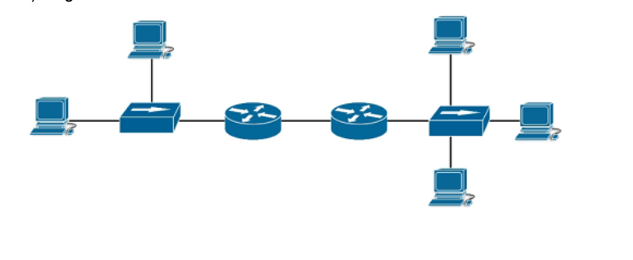

Tema 4. Capa de enlace¶
En este tema bajamos a la capa 2: cómo se forman las tramas, cómo se usa la MAC, cómo el switch decide a qué puerto enviar y qué son los dominios de colisión y difusión.
Primera clase
Empieza por el cuestionario inicial. No hace falta estudiar el tema completo antes: el cuestionario sirve para ver qué sabes al empezar.
Propuesta didáctica¶
Trabajamos los RA1 y RA4 del módulo Redes de área local (0225):
RA1. Reconoce la estructura de redes locales cableadas analizando las características de entornos de aplicación y describiendo la funcionalidad de sus componentes.
RA4. Instala equipos en red, describiendo sus prestaciones y aplicando técnicas de montaje.
Criterios de evaluación (selección)¶
RA1
- CE1a: Se han descrito los principios de funcionamiento de las redes locales.
- CE1c: Se han descrito los elementos de la red local y su función.
RA4
- CE4a: Se han identificado las características funcionales de las redes inalámbricas.
- CE4g: Se han identificado los protocolos.
- CE4h: Se han configurado los parámetros básicos.
VLAN
Las VLAN (CE4j) se desarrollan en el Tema 6. Aquí solo una mención breve: el switch puede segmentar lógicamente; el detalle (access/trunk, 802.1Q) va más adelante.
Contenidos¶
- Subcapas LLC y MAC; funciones de la capa de enlace.
- Trama Ethernet IEEE 802.3; CRC / FCS.
- Acceso al medio: idea de CSMA/CD (y mención CSMA/CA en Wi‑Fi).
- Switch: aprendizaje MAC; dominios de colisión y difusión.
- STP y EtherChannel (visión breve).
- Protocolos 802.3 / 802.11 (mención).
Programación de aula (orientativa, ~14–16 h)¶
| Sesiones | Contenidos | Actividades |
|---|---|---|
| 1 | Presentación + cuestionario inicial | Cuestionario |
| 2–3 | LLC/MAC; trama Ethernet; CRC | AC401 |
| 4 | Segmentación y agrupación | AC402 |
| 5–7 | Acceso al medio; switch y MAC learning | AC403 |
| 8–9 | Dominios colisión / difusión | PR401 |
| 10–11 | STP (y EtherChannel breve) | AC404 |
| 12–14 | Packet Tracer: STP | PR402 |
| 15–16 | Repaso | — |
Cuestionario inicial¶
Antes de empezar — responde con lo que sepas
- ¿Qué función cumple la capa de enlace en el modelo OSI?
- ¿Qué son las subcapas LLC y MAC?
- ¿Qué campos principales tiene una trama Ethernet?
- ¿Para qué sirve el CRC?
- ¿Qué diferencia hay entre un hub y un switch?
- ¿Qué es una dirección MAC y cómo la usa el switch?
- ¿Qué son un dominio de colisión y un dominio de difusión?
- ¿Para qué sirve el protocolo STP?
- ¿Qué es una VLAN? (solo idea; el detalle es Tema 6)
Soluciones
Las soluciones se trabajan en clase o se publican en Aules cuando proceda.
La capa de enlace¶
La capa de enlace (nivel 2 OSI) organiza los bits de la capa física en tramas, añade direccionamiento de enlace (MAC), detecta errores y gestiona el acceso al medio cuando varios equipos lo comparten.

Funciones habituales:
- Formación y delimitación de tramas.
- Direccionamiento MAC.
- Detección de errores (CRC).
- Control de flujo (idea básica).
- Control de acceso al medio (CSMA/CD, etc.).
Subcapas LLC y MAC¶
En Ethernet (familia IEEE 802) la capa de enlace se divide en:
| Subcapa | Norma / idea | Qué hace |
|---|---|---|
| LLC (Logical Link Control) | IEEE 802.2 | Interfaz uniforme hacia la capa de red; independiente del medio |
| MAC (Medium Access Control) | específica del medio | Acceso al medio, direcciones MAC, empaquetado de tramas |

Trama Ethernet (IEEE 802.3)¶
La trama es la PDU de la capa de enlace. En Ethernet cableada usamos el formato IEEE 802.3.

Campos (visión SMR)¶
| Campo | Tamaño (aprox.) | Función |
|---|---|---|
| Preámbulo + SDF | 8 bytes | Sincronización y comienzo de trama |
| MAC destino / origen | 6 + 6 bytes | Quién recibe / quién envía |
| Longitud / Tipo | 2 bytes | Longitud o tipo de protocolo superior (p. ej. IPv4) |
| Datos (+ relleno) | 46–1500 bytes | Carga útil; mínimo 64 bytes de trama |
| FCS | 4 bytes | CRC-32 para detectar errores |
Dirección MAC (48 bits): se escribe en hex (F2:3E:C1:8A:B1:01). Los primeros 3 bytes suelen ser el OUI del fabricante; los últimos identifican la tarjeta. FF:FF:FF:FF:FF:FF es broadcast (todos en el dominio de difusión).
Etiqueta VLAN
En un enlace troncal puede aparecer una etiqueta 802.1Q (4 bytes). Lo detallamos en el Tema 6.
CRC (detección de errores)¶
- El emisor calcula un valor CRC y lo pone en el FCS.
- El receptor recalcula el CRC.
- Si no coincide → trama errónea → se descarta (el CRC no corrige; la retransmisión la pide la capa superior si hace falta).
Ventajas: implementación sencilla en hardware y buena detección de errores por ruido. Limitación: detecta, no corrige.

Segmentación y agrupación¶
- Segmentación: si los datos son demasiado grandes, se parten en tramas (límite práctico ~1500 bytes de datos en Ethernet).
- Agrupación: varios mensajes cortos pueden ir en una sola trama para reducir overhead de cabeceras.
Acceso al medio¶
Cuando el medio se comparte, hacen falta reglas para no pisarse. Familias habituales:
| Familia | Idea | Ejemplo |
|---|---|---|
| Particionado de canal | Reparto fijo (tiempo / frecuencia) | TDM, FDM |
| Toma de turnos | Solo transmite quien tiene permiso / testigo | Polling, Token Ring |
| Acceso aleatorio | Compiten cuando necesitan | ALOHA, CSMA/CD, CSMA/CA |
CSMA/CD (idea Ethernet clásico)¶
- Carrier Sense: escuchar antes de transmitir.
- Multiple Access: si está libre, transmitir.
- Collision Detection: si hay colisión, parar, esperar un tiempo aleatorio (backoff) y reintentar.
En redes modernas con switches full-dúplex las colisiones prácticamente desaparecen: cada puerto es un dominio de colisión propio.
CSMA/CA (mención Wi‑Fi)¶
En inalámbrico (IEEE 802.11) se usa CSMA/CA (evitar colisiones), porque detectarlas en el aire es más difícil que en cable.
Diferencia clave
CSMA/CD detecta colisiones después (Ethernet cableado clásico). CSMA/CA intenta evitarlas antes (Wi‑Fi).
Switches y aprendizaje MAC¶
Un switch reenvía tramas según la tabla MAC (MAC ↔ puerto):
- Lee la MAC origen y la asocia al puerto de llegada.
- Si conoce la MAC destino, envía solo a ese puerto.
- Si no la conoce (o es broadcast), inunda (todos los puertos excepto el de origen).
Ventajas frente al hub: menos colisiones, mejor rendimiento, full-dúplex y menos tráfico visible en todos los puertos. Las entradas de la tabla MAC suelen caducar si no se renuevan (aging).
Dominios de colisión y de difusión¶
| Concepto | Qué es | Hub | Switch | Router |
|---|---|---|---|---|
| Dominio de colisión | Equipos cuyas tramas pueden colisionar | Extiende (1 por hub) | 1 por puerto | Separa por interfaz |
| Dominio de difusión | Quién recibe broadcast | Extiende | Extiende (mismo switch) | Limita (cada interfaz = otro dominio) |



Regla práctica
Contar dominios: cada puerto de switch (y cada interfaz de router) ≈ un dominio de colisión; cada interfaz de router ≈ un dominio de difusión. Un switch solo no “rompe” el broadcast.
STP (Spanning Tree) — breve¶
Si varios switches forman un bucle físico (redundancia), aparecen problemas graves:
- Bucles de tráfico e inundación de broadcast.
- Saturación del ancho de banda.
- Tablas MAC inestables.
STP convierte la malla física en un árbol lógico sin bucles:
- Los switches intercambian BPDU.
- Se elige un switch raíz (root bridge).
- Se calculan las mejores rutas hacia la raíz.
- Se bloquean los puertos que cerrarían bucles.
- Si falla un enlace activo, se reactiva uno bloqueado.
Variantes: RSTP (convergencia más rápida), MSTP (varios árboles / VLANs).
EtherChannel — breve¶
EtherChannel (agregación de enlaces) une varios cables físicos en un enlace lógico de más ancho de banda y con cierta redundancia. Negociación: LACP (estándar IEEE) o PAgP (Cisco); también modo manual (ON). Se usa entre switches o entre switch y servidor.
Protocolos de enlace (mención)¶
| Ámbito | Estándares / idea |
|---|---|
| Cableado | IEEE 802.3 (Ethernet, Fast, Gigabit…) |
| Inalámbrico | IEEE 802.11 (Wi‑Fi); CSMA/CA |
| Otros (contexto) | Token Ring, FDDI (históricos) |
Dispositivos típicos de capa 2: bridges, switches, puntos de acceso.
VLAN (adelanto)
Una VLAN crea redes lógicas dentro del mismo switch físico y reduce dominios de difusión. Diseño y configuración (access/trunk, 802.1Q) → Tema 6.
Actividades¶
Formato de entrega
Las entregas en Aules son obligatorias en Markdown (.md). No se aceptan PDF.
Nombre del archivo: AC4XX.md o PR4XX.md (sustituye XX por el número). Respeta la fecha de vencimiento.
Escribiremos los .md con Visual Studio Code.
Cómo empezar
- Guía de Markdown: tutorialmarkdown.com/guia
- Documentación de Visual Studio Code: code.visualstudio.com/docs
AC401 — Trama Ethernet¶
- AC401. (RA1 // CE1a, CE1c // AC 0–1). Esquema de la trama IEEE 802.3: campos, tamaño aproximado y función. Incluye un ejemplo con valores hexadecimales inventados (MAC origen/destino, tipo 0x0800) y explica el papel del FCS/CRC.
AC402 — Segmentación vs agrupación¶
- AC402. (RA1 // CE1a // AC 0–1). Explica con un ejemplo cuándo conviene segmentar y cuándo agrupar en la capa de enlace. Relaciónalo con el tamaño máximo de trama Ethernet y con la eficiencia.
AC403 — Dominios de colisión y difusión¶
- AC403. (RA1 // CE1a, CE1c // AC 0–1). Tabla hub / switch / router: efecto sobre dominios de colisión y de difusión. Dos frases de impacto en el rendimiento.
AC404 — STP¶
- AC404. (RA1 // CE1a // RA4 // CE4g // AC 0–1). Problema que resuelve STP; idea de switch raíz y puerto bloqueado; diferencia breve STP vs RSTP.
PR401 — Dominios en esquemas¶
- PR401. (RA1 // CE1a, CE1c // PR 0–10). Identificación de dominios de colisión y difusión.
Recuerda: hub → un dominio de colisión compartido; switch → un dominio de colisión por puerto y un dominio de difusión; router → separa colisión y difusión por interfaz.
Responde en el .md (marca la opción correcta; en las de varias respuestas, todas las válidas):
-
¿En qué caso PC3 está en el mismo dominio de colisión que PC1?
a) Mismo switch · b) Separados por switch · c) Mismo hub · d) Interfaces distintas del mismo router -
¿Qué situaciones ponen a PC3 en otro dominio de broadcast que PC1? (elige las correctas)
a) Separados por hub · b) Mismo switch · c) Separados por bridge · d) Otra red lógica · e) Separados por switch · f) Separados por router -
Sobre la figura de este tema (
dominio_colision_difusion.png): ¿cuántos dominios de broadcast y de colisión hay? Justifica el conteo en 3–5 líneas.
a) 3 BD / 3 CD · b) 2 BD / 3 CD · c) 1 BD / 2 CD · d) 3 BD / 8 CD · e) 8 BD / 3 CD · f) Ninguna -
Afirmaciones ciertas (elige las correctas):
a) Los switches disminuyen el nº de dominios de colisión · b) Los routers disminuyen el nº de dominios de colisión · c) Los routers aumentan el nº de dominios de colisión · d) Los switches aumentan el nº de dominios de colisión · e/f) Bridges disminuyen / aumentan dominios de colisión -
¿Qué afirmación es incorrecta?
a) Los hubs aumentan el nº de dominios de broadcast · b) Los routers aumentan el nº de dominios de colisión · c) Los routers aumentan el nº de dominios de broadcast · d) Cada interfaz del router es un dominio de broadcast y de colisión · e) Los switches aumentan el nº de dominios de colisión
| Criterio | Descripción | Puntos |
|---|---|---|
| Preguntas 1–2 | Respuestas coherentes | 0–2 |
| Pregunta 3 (diagrama) | Conteo justificado | 0–3 |
| Preguntas 4–5 | Teoría hub/switch/router | 0–3 |
Claridad del .md |
Orden y legibilidad | 0–2 |
| Total | /10 |
PR402 — Packet Tracer: STP¶
- PR402. (RA1 // CE1a, CE1c // RA4 // CE4g, CE4h // PR 0–10). Simulación en Packet Tracer: 3 switches en bucle, PCs y un servidor; observar tabla MAC, puertos bloqueados/forwarding por STP y reconvergencia al cortar un enlace. El guion completo se facilitará en clase / Aules.
Referencias rápidas¶
- Sitio del módulo: fjavier-hernandez.github.io/ral
- Simulación: Cisco Packet Tracer
- Entregas: Visual Studio Code + Markdown
- Normas: Normas del taller